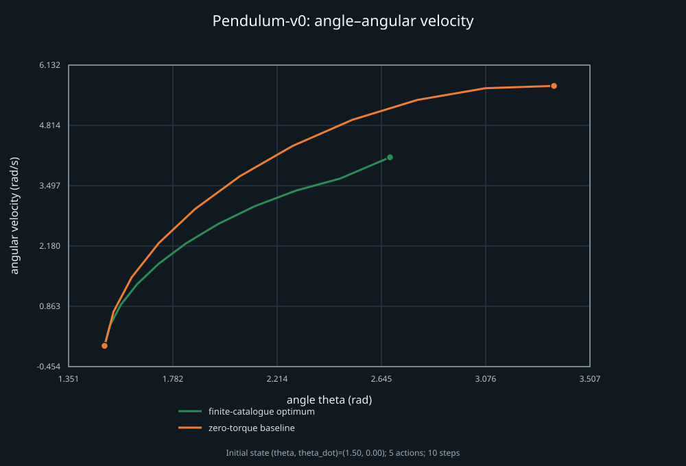

Pendulum-v0: finite-action control pilot
This source-attributed report re-expresses the Gym v0.21.0 Pendulum equations and scores a short fixed open-loop catalogue. It is an authored initial-state and action-catalogue adaptation, not the continuous-action, full-horizon Gym task.

| Track | Accumulated cost | Terminal (theta, theta dot) |
|---|---|---|
| Finite catalogue optimum | 41.0593572770 | (2.680070, 4.118594) |
| Zero torque | 60.1957934030 | (3.358145, 5.677359) |
Finite scope: 9,765,625 open-loop plans, 10 steps of 0.05 s, torque catalogue [-2.0, -1.0, 0.0, 1.0, 2.0] N·m, authored initial state [1.5, 0.0]. The search is exhaustive only over this catalogue and horizon.
Upstream notebook: pinned `optimal_control` source (blob db58eb7779d84a3a5032288734d61f6d6dcdba09). Adopted simulator sources: Pendulum dynamics and Gym registry; both are pinned to Gym v0.21.0 commit c755d5c35a25ab118746e2ba885894ff66fb8c43. Raw record and figure data are included beside this page.
Reproduction: build the optional csl_env717_pendulum report driver and run python3 scripts/reports/env717/check_pendulum.py <driver> --output <new-directory>.